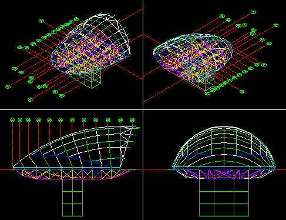
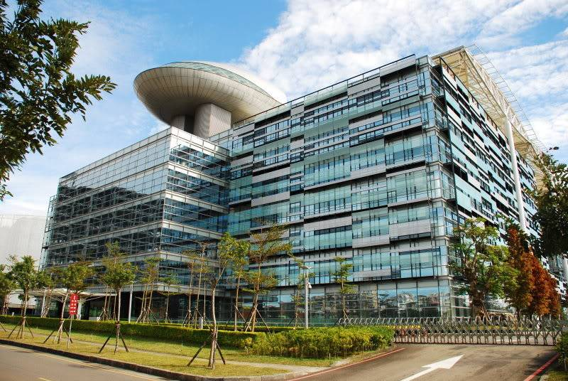
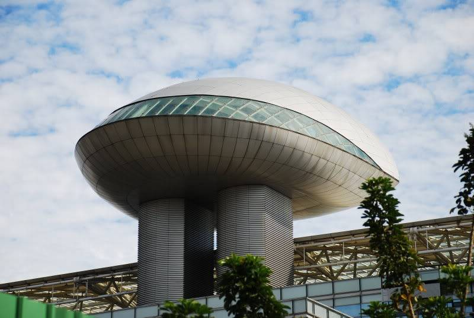

2003年我轉換跑道，開始了我的結構繪圖員生涯，在這裡因為算是半個外商公司，公司有開發AutoCAD系統，也開始了我的AutoCAD之旅(開始鑽研與研究)。
這個建築物當初有工地參觀，回家再翻翻相片(後補)~
而這個結構圖是我在以前公司畫的3D線架構，跟大家也分享一下!!

以下實景相片為mars拍攝(借用一下囉)~


所以以我自己為例，只要你有心無論是在哪哩，一定能發光發熱的!
只要你願意繼續堅持下去，每個人都行的，但是第一步一定要由你自己踏出~